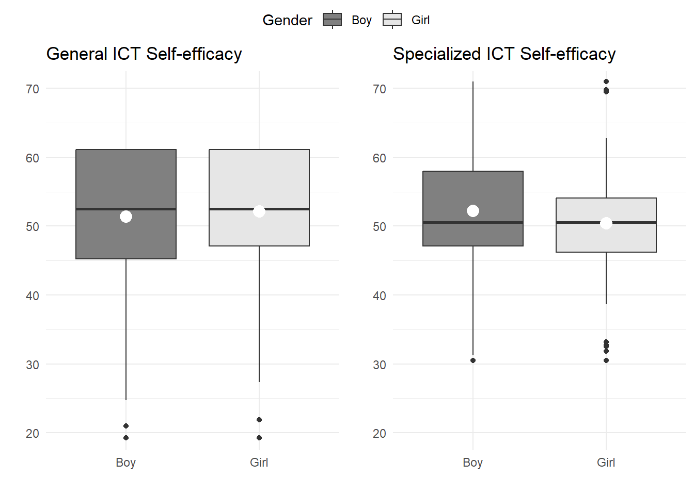
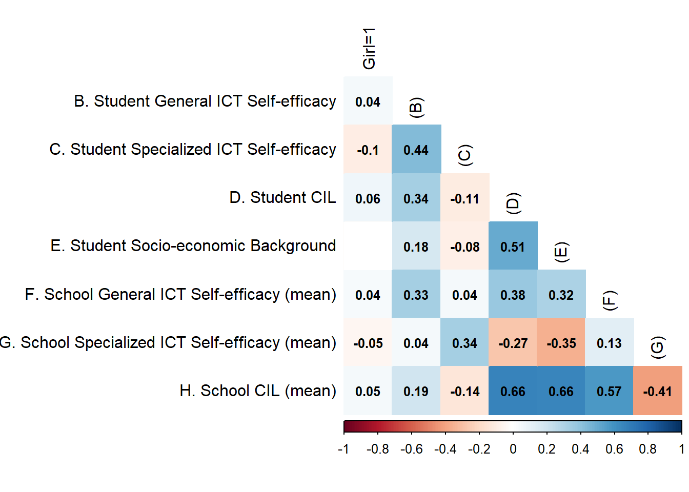
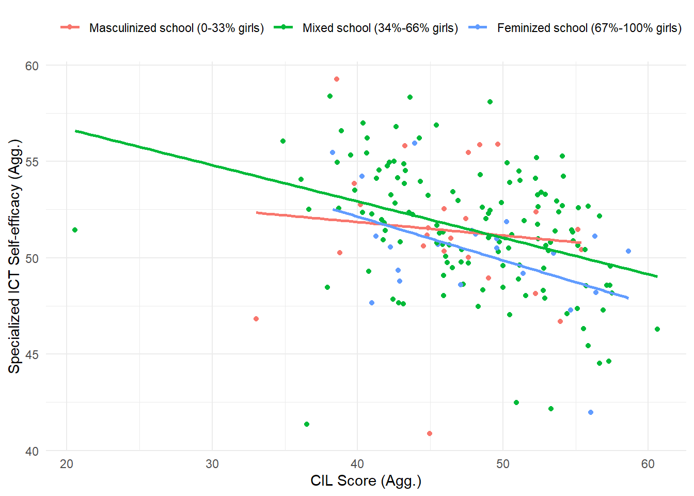

| Item | Original label | Summarised label |
|---|---|---|
| General Self-efficacy | ||
| is2g27a | Edit digital photographs or other graphic images | Edit graphic images |
| is2g27c | Write or edit text for a school assignment | Write or edit text |
| is2g27d | Search for and find relevant information for a school project on the Internet | Search and find information on internet |
| is2g27i | Create a multi-media presentation (with sound, pictures, or video) | Create multi-media presentation |
| is2g27j | Upload text, images, or video to an online profile | Upload multimedia to an online profile |
| is2g27k | Insert an image into a document or message | Insert an image into a document/message |
| is2g27l | Install a program or [app] | Install a program/app |
| is2g27m | Judge whether you can trust information you find on the Internet | Judge internet information veracity |
| Specialized Self-efficacy | ||
| is2g27b | Create a database (e.g. using [Microsoft Access ®]) | Create a database |
| is2g27e | Build or edit a webpage | Build a webpage |
| is2g27g | Create a computer program, macro, or [app] | Create a computer program/app |
| is2g27h | Set up a local area network of computers or other ICT | Set up a local area network |
The underestimation Report Analysis Self-efficacy and gender differences, ICILS 2018
Introduction
The next report contains the method section and the diverse analysis made for the article of the social line of NUDOS.
To remember our hypothesis, there’s the next figure:
h1:
Method
Data
The database to be used is the International Computer and Information Literacy (ICILS from now), study made by the International Association for the Evaluation of Educational Achievement (IEA) in the year 2018. The participants were students of eighth grade which were sampled using a random multistage stratified cluster design to be representative at the school and student/teacher level in all the countries measured. Schools were regarded as a “cluster,” with all students and teachers nested within these clusters. Schools can therefore be referred to as the primary sampling units (level 2 in multilevel models), and teachers and students as the secondary sampling units (level 1 in multilevel models).
As an exploratory study conducted by researchers originating from Chile, our analysis focused exclusively on the Chilean subset of the ICILS 2018 dataset. The raw sample comprised 3,092 students, distributed across 178 schools. Both student and school levels are representative of the broader Chilean population.
ICILS utilized various measurement instruments to collect data. Initially, participants underwent a Computer Literacy test, consisting of tasks with multiple-choice items. Based on their responses, each individual student was assigned a score for Computer and Information Literacy (CIL from now on). Subsequently, students completed a questionnaire, which inquired about their home background, values, beliefs, attitudes, and behaviors related to Computer and Information technologies. Following the questionnaire session, students responded to a Computational Thinking test (CT hereafter), featuring multiple-choice items. In Chile wasn’t applied this last test. In parallel to this process, the school’s teachers are also subjected to a questionnaire to assess their values, beliefs, attitudes and behaviours related to Computer and Information technologies and their rol in teaching. Also the principals and ICT managers of the school where surveyed to obtain information of the school social characteristics and ICT infrastructure.
ICILS brings the user three different databases which can be merged between them. The first one is the student database, where is located the CIL, CT score, and responses of the questionnaire. The second one have the teachers’ questionnaire responses. And the final one have the characterization of the school. For this research, we merge some variables of school database with student database.
No weights were used in the estimates below, as this was an initial exploratory study.
By the way, data were also requested from the Chilean government’s Ministry of Education to complement ICILS information on socio-demographics and academic performance of the schools.
Variables
Student level
Sex of Student
The sex of the student is provided in the ICILS student database as dichotomic, where Girl is 1 and Boy 0.
General and Specialized ICT Self-efficacy
The ICILS student data encompasses two indices of digital self-efficacy: one for general or basic applications and the other for advanced or specialized tasks. Both indices were constructed using different items from the same battery of questions. The phrasing of the battery was as follows: ‘How well can you do each of these tasks when using ICT?’ Participants were presented with three response categories:
- I do not think I could do this.
- I have never done this, but I could work out how to do this.
- I know how to do this.
Due to the extended length of the labels for items related to ICT self-efficacy, we made the decision to truncate them. This modification was made to facilitate the inclusion of these labels in graphical plots, without altering the intended meaning of the phrases. The Table 1 section illustrates both the original and the summarized labels for the items comprising both indexes
Both indexes were constructed by the IEA using the Weighted Likelihood Estimation Method, where scores have a mean of 50 and a standard deviation of 10, based on equal weights for all countries. A higher index value indicates a higher level of self-efficacy.
In Chile, the General ICT self-efficacy index has a mean of 51.73, with a standard deviation of 8.87. The minimum and maximum values for this index are 13 and 61.12, respectively.
For Specialized ICT self-efficacy in Chile, the mean is 51.27, with a standard deviation of 9.31. The range of minimum and maximum values for this index are 30.53 and 71.01, respectively.
The Table 2 table includes missing values for each item and the total missing values for both indexes. It is important to note that the missing data presented here will not be included in the subsequent analyses as part of the N.
| Item | Missing values (n) | Proportion |
|---|---|---|
| General Self-efficacy | ||
| Edit graphic images | 102 | 3% |
| Write or edit text | 131 | 4% |
| Search and find information on internet | 136 | 4% |
| Create multi-media presentation | 142 | 5% |
| Upload multimedia to an online profile | 155 | 5% |
| Insert an image into a document/message | 191 | 6% |
| Install a program/app | 193 | 6% |
| Judge internet information veracity | 224 | 7% |
| Specialized Self-efficacy | ||
| Create a database | 120 | 4% |
| Build a webpage | 133 | 4% |
| Create a computer program/app | 132 | 4% |
| Set up a local area network | 154 | 5% |
Computer and Information Literacy
The CIL scale used in the analyses is based on a test applied by IEA. The test consist in a computer application with a set of five modules, which each students have to respond two of them randomly selected. Every module have 30 minutes of assesment. The structure of a module consisted on a set of questions and tasks based on a realistic theme and following a linear narrative structure. These modules have a series of small discrete tasks (typically taking less than a minute to complete) followed by a large task that typically took 15 to 20 minutes to complete. In total, the modules comprised 81 discrete questions that generated 102 score points. So, in total, and individual could reach the maximum score of 204 points.
The five modules measured different Computer Abilities. The first one was oriented in website construction, while the second one in digital files managing and collection. The thirst challenged students to plan a school trip trough database building and mapping tools. Another module include a school-based social network where students were encouraged to post and message their peers to join a board games interest group. The last module requested to research information about recycling on internet, and then design infographics about carbon footprint awareness.
The ICILS CIL reporting scale was established in ICILS 2013, with a mean of 500 (the average CIL scale score across countries in 2013) and a standard deviation of 100 for the equally weighted national samples that met IEA sample participation standards in the first cycle (2013). The ICILS database offers five possible values of the CIL score that were generated with full conditioning to derive summary student achievement statistics. Conventionally, papers based on this study usually occupies the first plausible value, which is coded “pv1cil”. This research is no exception. As more the value of the scale, more the CIL of the student.
Due to the large magnitude of the figures for this variable, it had to be multiplied by 0.1 to introduce it into the subsequent regression models.
Socioeconomics variables (Control)
School Level
ICT Self-efficacy
To explore the distribution of data at the school level, both self-efficacy indexes were aggregated using means. The code for constructing the aggregated variables is accessible on the GitHub repository of the study.
Computer and Information Literacy (School level)
To explore the distribution of CIL at school level, the score were aggregated using means. The code for constructing the aggregated variables is accessible on the GitHub repository of the study.
Girl students ratio (Numerical)
2018 ICILS school database didn’t include the n of girl and boy in the school, but as the student sample is representative of the student gender distribution, the ratio of girls students in the school was estimated by dividing the number of girl students in the sample by the total number of students in the sample.
Gender composition of school (Categorical)
Girl student ratio variable was recoded to categorical. The categories are “Masculinized school” by the range of 0 to 0.33, “Mixed school” by the range 0.34 to 0.66 and “Feminized school” by the range of 0.67 to 1. The Table 3 displays the N of schools and n of girls and boys in the three categories made.
| Type | N school | n boy students | n girl students |
|---|---|---|---|
| Feminized school (67%-100% girls) | 22 | 58 | 301 |
| Masculinized school (0-33% girls) | 24 | 269 | 80 |
| Mixed school (34%-66% girls) | 132 | 1192 | 1192 |
Vulnerability school index
STEM teacher proportion
SIMCE Score
Descriptive tables
Table 4 displays key statistics of the student level variables to explore. Important to highlight gender distribution of the sample is similar and the main variables of self-efficacy have 93 and 96 missing values, and similar statistics results.
| Variables | N = 3,0921 |
|---|---|
| Sex of student | |
| Boy | 1,519 / 3,092 (49%) |
| Girl | 1,573 / 3,092 (51%) |
| ICT self-efficacy regarding the use of general applications | 52 (9) [52] |
| Missing values (NA) | 93 |
| ICT self-efficacy regarding the use of specialist applications | 51 (9) [51] |
| Missing values (NA) | 96 |
| Computer and Information Literacy Score | 48 (9) [49] |
| National Index of Socioeconomic Background | 0.20 (1.18) [0.06] |
| Missing values (NA) | 24 |
| 1 n / N (%); Mean (SD) [Median] | |
Table 5 provides key statistics for the aggregated variables utilized in the analysis. The values align closely with those observed at the individual level, except for the CIL score. As expected, schools tend to have a relatively balanced gender composition, hovering around the 50/50 mark. Recoded as categorical, the major part of the schools are mixed (72%), and feminized and masculinized have similar relative frequency (13% and 14% respectively). There’s no missing data in this variables.
| Variables | N = 1781 |
|---|---|
| General ICT Self-efficacy aggregated by school | 51.54 (3.19) [51.92] |
| Specialized ICT Self-efficacy aggregated by school | 51.30 (3.26) [51.25] |
| CIL Score aggregated by school | 47.7 (6.2) [48.0] |
| Proportion of girl students | 0.50 (0.18) [0.50] |
| Gender composition type (Categorical) | |
| Feminized school (67%-100% girls) | 22 / 178 (12%) |
| Masculinized school (0-33% girls) | 24 / 178 (13%) |
| Mixed school (34%-66% girls) | 132 / 178 (74%) |
| 1 Mean (SD) [Median]; n / N (%) | |
Analysis
The analysis method is divided in five steps.
First, a descriptive exploration where the frequencies of the items that make up the self-efficacy indices are plotted and then the magnitude and significance of the gender differences in each of these items are verified. To confirm the significance of the differences in means by gender, each item is subjected to an anova test.
Secondly, a descriptive exploration of gender differences in the self-efficacy indices composed of the items is made. In this case, histograms and box plots are used to evaluate distribution of the variables by gender. In addition, self-efficacy indices and literacy test scores are subjected to significance tests in order to highlight whether gender differences are due to the behaviour of the population parameter.
Thirdly, the relationships between variables are further explored through correlational statistics. All variables are subjected to a Pearson correlation matrix, then the gender effect level of the correlations between the main research variables is assessed through a reduced correlation matrix. In these matrices only the significant results are displayed. In addition, with dot plots where the correlation of these variables is visualised at the aggregate level, and differentiated according to the gender composition of each school. To conclude the section, the mean differences by gender in each type of self-efficacy according to the gender composition of the school are evaluated trough a cleveland plot.
At four, a measurement model of both self-efficacy indices is developed, considering an exploratory factor analysis.
In fifth and last place, multilevel linear regression models are constructed. The models follow a hierarchical logic, i.e. as more models are added, new independent and control variables are added to assess the effect of each separately and together. Before add independent variables, it is estimate a null model to get the amount of self-efficacy indexes variability associated to between-school differences (Intraclass Correlation).
The order of presentation keep the same order of the hypothesis this research is trying to answer. At a first step, all models estimated are fixed effects. The first model contains only the effect of the dichotomous sex variable. The second model adds the CIL test score as an independent variable. From there, a third model is tested that adds the individual-level interaction between sex and CIL test score. The interaction effect is then discarded and two models are estimated to check separately the compositional effects of school level on General student ICT self-efficacy. The first one considers the effect of the proportion of female students while the second one considers the effect of the average CIL score at school. The complete model condenses all the variables reviewed above, except the individual interaction.
The next step is to assess the randomness of the models. The fixed effects model with individual level variables is subjected to a deviance test with the same model but with random slope on student sex on the one hand, and CIL score on the other hand.
If either test is significant, the process is repeated, but now between the full model with random slope on sex or CIL score and two new models with moderation effects on the level 2 variables, one for the proportion of females in the school with student sex, and one for the average CIL score of the school with student sex.
Two estimation methods are provided as alternative to report the explained variance of the models: Nagelkerke’s and Cox & Snell’s R square.
Results are considered significant at 95% confidence level (p<0.05). All calculations, processing and visualization were done through the R package. The reader can find the script in the GitHub repository of the research.
Results
Descriptive gender differences
Items distribution
Figure 1 explores the distribution of responses for General ICT Self-efficacy items. Notably, across all tasks, a significant proportion of students—no less than 65%—expressed confidence in their ability to perform these tasks, while fewer than 10% reported an inability to do so. On the whole, participants demonstrated a high level of general self-efficacy.
However, subtle differences emerge when examining individual items, revealing a nuanced trend. Items associated with judging information or manipulating multimedia documents tended to yield lower levels of self-efficacy compared to those related to text documents, internet searching, and downloading of information. Specifically, creating a multi-media presentation, judging internet information veracity, and editing graphic images received the lowest scores in the positive response category (67%, 71%, and 76% respectively), while garnering the highest scores in the intermediate category (26%, 24%, and 19% respectively). On the contrary, writing or editing a text, searching and finding information, inserting an image into a document/message, and installing a program/app achieved the highest scores in the positive response category (88%, 87%, 84%, and 84% respectively), with the lowest scores in the intermediate category (10%, 10%, 12%, and 11% respectively).
This first approach suggests that the sample presents greater efficacy around operational tasks than communicative or social activites with digital technologies.

The Figure 2 illustrates the distribution of responses for items that constitute the Specialized ICT Self-efficacy index. Less than a 30% of students confidently state their proficiency in tasks such as building a webpage or creating a computer program. However, this percentage increase more than when it comes to tasks like setting up a local area network (31%) or creating a database (35%). This pattern suggests that students tend to perceive less skills in advanced than in basic ICT tasks, and within advanced tasks, a lower level of proficiency in activities related to software and webpage development, while expressing more confidence in activities centered around data manipulation or network connectivity.

Figure 3 presents mean differences in gender ICT self-efficacy by item. Notably, all items contributing to general self-efficacy exhibit statistically significant differences in favor of girls, with the exception of ‘install a program/app,’ which shows significant differences in favor of boys, and ‘judge internet information veracity,’ which does not exhibit significant differences. However, it’s important to note that the magnitude of the gender gap in all items is relatively narrow when compared to the specialized self-efficacy items.
All specialized self-efficacy items score lower than their general self-efficacy counterparts, indicating a lower proficiency in advanced computational tasks for both, boys and girls. Nevertheless, within specialized self-efficacy, there are notable gaps, some double or even triple than those observed in general self-efficacy. As expected, these gaps favor males and occur specifically in ‘Set up a local area network’ and ‘Create a computer program/app,’ while ‘Build a webpage’ and ‘Create a database’ show no significant gender differences.
Therefore, it can be concluded that gender differences in self-efficacy are not consistent across all dimensions of the concept but rather manifest in specific areas. Particularly in advanced self-efficacy, where two items exhibit significant gaps, while two others show no significant differences. Additionally, the overall trend suggests that girls may have a slight advantage over boys in general tasks, whereas boys demonstrate a more significant advantage in specialized technological tasks.”
Indexes distribution
Table 6 explores the distribution of the key variables utilized in this study based on gender. The results indicate that girls exhibit a significant mean advantage over boys in the Computer Literacy test. Conversely, boys demonstrate a significant mean advantage in specialized self-efficacy. Notably, there are no significant differences in general ICT self-efficacy. This allow to speculate that the overestimation of boys and underestimation of girls is primarily occurring in specialized ICT tasks.
It is essential to mention that both self-efficacy indexes have, at least, 93 missing values.
| Variables | N | Overall, N = 3,0921 | Boy, N = 1,5191 | Girl, N = 1,5731 | p-value2 |
|---|---|---|---|---|---|
| Computer and Information Literacy Score | 3,092 | 48 (9) | 48 (9) | 49 (9) | <0.001 |
| ICT self-efficacy regarding the use of general applications | 2,999 | 52 (9) | 51 (9) | 52 (9) | 0.057 |
| ICT self-efficacy regarding the use of specialist applications | 2,996 | 51 (9) | 52 (9) | 50 (9) | <0.001 |
| 1 Mean (SD) | |||||
| 2 Wilcoxon rank sum test | |||||
Despite having negligible differences in statistical measures, both self-efficacy indexes exhibit distinct internal distributions. As illustrated in Figure 4, General ICT Self-efficacy demonstrates an increasing distribution toward higher values (similar to inverted chi-square). Conversely, ICT Specialized Self-efficacy has a shape that closely resembles a normal distribution.
In simpler terms, for General Self-efficacy, responses tend to be concentrated at the higher end of the spectrum. In contrast, for Specialized Self-efficacy, values are concentrated around the middle, showcasing a relatively symmetrical dispersion in both tails.

Despite the notable differences in means, the observation of identical standard deviations in both distributions raises questions. The Figure 5 provides additional insights into the gender distribution of both indexes. While the median remains consistent for both genders, boys exhibit a greater dispersion, characterized by a larger interquartile range and a more pronounced gap between the mean and the median. In the case of General Self-efficacy, girls have a slightly larger proportion of values towards the top of the plot. However, in Specialized Self-efficacy, girls exhibit more values towards the lower end and more outliers in both the top and bottom extremes. Consequently, it can be inferred that, even though there are no significant differences in General Self-efficacy, the disparity in Specialized self-efficacy occurs in centralized data, with males having more cases in the top values and girls displaying more outlier cases in both tails of the index.
It is crucial to emphasize that the index figures are not directly comparable with each other, as they are standardized according to the distribution of scores across the measured countries.

To assess the distribution of all mentioned variables, refer to the Figure 6. The plots reveal the following observations:
- Both self-efficacy indexes exhibit a similar score distribution at the school level.
- The distribution of the proportion of girls in schools is effectively divided into three categories: co-educational, boys’, and girls’ schools. This suggests the potential utility of treating this variable in a categorical manner.
- The CIL score variable displays an anomalous case in the lower tail, contributing to a distortion in the graph. However, the majority of cases are concentrated in the low-intermediate and upper-intermediate values.

Relation between variables
After completing the univariate exploration, it is crucial to investigate how the variance of variables is interrelated. This section encompasses bivariate and correlation analyses to unveil potential associations between variables.
Correlation graph
To provide an overview of the relationships between variables, a correlogram of all explored variables is presented in Figure 7. Key findings include:
- All the correlation values are significative, less the cross between sex and educational parents level
- There is a relatively intermediately-high positive effect size between both Self-efficacy indexes (0.44).
- A considerable positive effect size is observed between General ICT Self-efficacy and the CIL score (0.33).
- Counter-intuitively, the effect size between Specialized Self-efficacy and CIL Score is slightly negative (-0.11).
- The sex of the student (managed as dummy) exhibits little effect size with all variables.
- At school level, the effect size of variables are similar, except of self-efficacy indexes relation, which is 0.20 points lower.
In essence, these results suggest that General and Specialized ICT Self-efficacy reinforce each other at the individual level. Students reporting higher General Self-efficacy tend to have advantages on CIL test over those with lower scores in that index. Additionally, an intriguing finding is that individuals with lower scores on the CIL test tend to report higher Specialized Self-efficacy. One possible explanation could be that as students progress beyond general ICT knowledge and delve into advanced topics, they become more aware of concepts and processes they do not know. Consequently, they may rely less on their computer literacy. This phenomenon aligns with the notion of underestimation, rooted in the ‘I know that I don’t know’ logic.

Gender reinforcement
Contrary to the initial proposal and the mentioned expectations, the effect size of gender appears to be quite limited when assessed as a continuous variable. However, when gender is cross-checked as a categorical variable, intriguing tendencies emerge. Table 7 encapsulates the differences in bivariate relations within the data by gender group.
As illustrated, boys tend to exhibit a more positive effect size in Self-efficacy indexes and between General Self-efficacy and CIL score (0.09 points and 0.04 points, respectively). Notably, the effect size between specialized self-efficacy and CIL score is more negative for girls than boys, registering at -0.04 points.
This final result raises speculation about the impact of underestimation due to advanced knowledge (‘Know that I don’t know’), which seems to be more pronounced in females. It suggests that girls with specialized technological skills may perceive their abilities as lower than boys with similar specialized technological skills.
| Gender Reinforcement effect between variables | |||
| Correlation by gender (Pearson Score) | |||
| Student Sex | General-Specialized | General-CIL | Specialized-CIL |
|---|---|---|---|
| Boy | 0.49 | 0.35 | -0.077 |
| Girl | 0.40 | 0.31 | -0.126 |
School gender composition Self-efficacy reinforcement
The scatter plots in Figure 8 vividly illustrate how the gender composition of schools shapes the reinforcement between the three principal aggregated variables explored.
In the first plot, it’s evident that in schools with a higher proportion of male students, there is a much stronger reinforcement between the two self-efficacy indices compared to mixed or feminized schools.
Contrastingly, the second plot, which examines the relationship between general self-efficacy and the computer literacy test, reveals no marked differences based on the gender composition of the school.
Lastly, in the plot depicting the interaction between specific self-efficacy and the school’s score on the computer literacy test, it’s notable that the similar negative slope observed in co-educational and feminized schools is attenuated for masculinized schools.
In essence, these findings suggest two important tendencies. Firstly, students appear to reinforce their sense of self-efficacy when predominantly surrounded by male peers. Secondly, the sense of ignorance associated with the acquisition of advanced computer technology skills is less pronounced when students are mostly surrounded by boys.


But, what’s happening between boys and girls in school context? Figure 9 plot the mean by gender in the three different types of school. There is an inverse effect between both self-efficacies. In general self-efficacy differences the advantage of girls increase as they are more surrounded by pairs of their own gender, but in specialized self-efficacy girls feel less confidence than boys as they are with more girls in the classroom. As the opposite way, boys lose advantages in masculinised schools for general self-efficacy, but the gap in their favour widens very sharply when the school tends to be feminized.
It can be speculated that Women feel more capable than men for general tasks when there are more women alongside them, but as the number of women in the classroom increases, men tend to feel more confident for specialised tasks.
Measurement model
Multilevel models
Null model
The null multilevel model for general self-efficacy as the dependent variable revealed an Intraclass Correlation Coefficient (ICC from now) of 0.05, indicating that approximately 5% of the total variance in the outcome variable can be attributed to between-school differences. The remaining 95% of the variance is within-school variance, suggesting substantial variability at the student level. For specialized ICT self-efficacy, the results are similar. The ICC is 0.06, which also suggests the most part of the variability reside in the student level.
But since there is proportion of the variances associated with differences between schools, it is decided to explore multilevel models that explain the behaviour of the self-efficacy variables.
General self-efficacy
The Table 8 displays the results of the multilevel regression models designed to answer the research question and their hypothesis in order.
When the model have sex as the unique independent variable, in mean, girls score 0.70 points more than boys in the general self-efficacy index. This is a lower magnitude (less than one point), but statistically significant at a 95% level of confidence. But when other factors as the CIL score or school level characteristics enter as control variables, significant gender differences are lost. In this way, gender differences are not intrinsic, as can be explained by other elements that models considers.
As the opposite case, the score on CIL test of the student have a positive effect which maintains it statistical significance (at greater than 99.9% confidence level) controlling for all other variables used. The beta of scaled CIL score round between 0.35 and 0.38 between models, which can be interpreted as when the CIL of the student increase by one point, the general self-efficacy score of the student will increase by more than 0.30.
The third model show there’s not significant results in interaction between sex and CIL score of the student. And when in the next models variables of school level are included, results show the proportion of women students have no significant effect over the students, but the mean score on CIL test of the school it have. Controlling by all variables, results suggest when CIL of the school increase in one point, the general self-efficacy of the student decrease in 0.09. In other words, students rounded with pairs with more computer literacy will feel less capabilities with simple tasks using ICT.
As fixed effect models were explored, the next step is verify between-schools differences in the slope of independent variables. Two deviance test were designed to compare the level one fixed slope model (sex + CIL) with one randomized by sex and other randomized by CIL. The model randomized by CIL was the only one which presented significant differences. Put another way, schools do not behave differently with respect to gender differences in ICT general self-efficacy, but there are different effects between schools with respect to CIL scores. The results of this model are displayed in the last column, the coefficients don’t change respect the fixed effects model 1.
A new ANOVA was tested, now between this random effects model and other including interaction between sex and CIL. There were not significant differences, so the exploration of general self-efficacy finished.
The explained variance of all models was estimated from two different methods. In both estimates, the explained part is less than 15%, so that other elements need to be integrated to explain the behaviour of general ICT self-efficacy.
| Only sex | Sex+CIL | Int. Lev.1 | + women ratio | + school CIL | Complete | CIL Random Slope | |
|---|---|---|---|---|---|---|---|
| Predictors | Estimates | Estimates | Estimates | Estimates | Estimates | Estimates | Estimates |
| (Intercept) | 51.31 *** (0.28) |
34.55 *** (0.93) |
33.09 *** (1.25) |
34.81 *** (1.08) |
37.20 *** (1.51) |
37.36 *** (1.62) |
34.59 *** (1.14) |
| Sex of student: Girl | 0.70 * (0.32) |
0.36 (0.31) |
3.36 (1.74) |
0.41 (0.32) |
0.37 (0.31) |
0.40 (0.32) |
0.32 (0.30) |
| Computer and Information Literacy Score(scaled by*0.1) |
3.51 *** (0.19) |
3.81 *** (0.26) |
3.51 *** (0.19) |
3.80 *** (0.23) |
3.80 *** (0.23) |
3.50 *** (0.22) |
|
| s_sexGirl:s_pv1cil | -0.62 (0.35) |
||||||
| c_gender_typeMasculinized school (0-33% girls) | 0.62 (0.78) |
0.52 (0.77) |
|||||
| c_gender_typeMixed school (34%-66% girls) | -0.52 (0.58) |
-0.54 (0.58) |
|||||
| School mean score CIL Test(scaled by*0.1) |
-0.85 * (0.39) |
-0.81 * (0.39) |
|||||
| Random Effects | |||||||
| σ2 | 74.46 | 68.01 | 67.96 | 67.99 | 67.98 | 67.97 | 66.63 |
| τ00 | 4.22 idschool | 1.84 idschool | 1.84 idschool | 1.78 idschool | 1.76 idschool | 1.71 idschool | 68.08 idschool |
| τ11 | 2.01 idschool.s_pv1cil | ||||||
| ρ01 | -1.00 idschool | ||||||
| N | 178 idschool | 178 idschool | 178 idschool | 178 idschool | 178 idschool | 178 idschool | 178 idschool |
| Observations | 2999 | 2999 | 2999 | 2999 | 2999 | 2999 | 2999 |
| Marginal R2 / Conditional R2 | 0.002 / 0.055 | 0.118 / 0.141 | 0.119 / 0.142 | 0.119 / 0.142 | 0.115 / 0.137 | 0.117 / 0.138 | 0.122 / NA |
| * p<0.05 ** p<0.01 *** p<0.001 | |||||||
Specialized self-efficacy
Table 9 follows the same hierarchical logic presentation of the previous Table 8, but now with specialized ICT self-efficacy as dependent variable. In this case there is not random effects models, because the ANOVA test results showed that there’s no differences between-schools in sex and CIL slope.
When sex introduce as the first independent variable of the regression model, it is estimated that being woman decrease in 1.75 points the score in ICT specialized self-efficacy, with a confidence level major than 99.9%. When other control variables are introduced, this result keeps with lower changes (less when it’s added an interaction effect between sex and CIL). It could be said there’s advantages from boys over girls in specialized ICT self-efficacy that are intrinsic to gender condition of the students.
Counter-intuitively, the score on CIL test have a significant negative effect of 0.08 when it’s added only with sex as independent variable. But as interaction effect or variables of school level enter into the equation, the coefficient decrease and lost it significance. So, against expectations, students with more computer literacy will tend to have less expectations of self-efficacy in advanced tasks using ICT, but this finding is not consistent controlling by elements related with school composition.
About school level variables, once again, women proportion of students didn’t show significant results. But in the “Complete” and “+ school CIL” models suggest the student individual CIL decrease by 0.18 when the school increase its re-scaled CIL score aggregated mean by one point (p<0.001). It is possible to say students have less expectations of self-efficacy in advanced tasks using ICT as their pairs have more Computer and Literacy.
The explained variance of all models in the table is lower than 10%, so it’s necessary to keep exploring other hypothesis to reveal the reasons of the specialized ICT self-efficacy behaviour.
| Only sex | Sex+CIL | Int. Lev.1 | + women ratio | + school CIL | Complete | |
|---|---|---|---|---|---|---|
| Predictors | Estimates | Estimates | Estimates | Estimates | Estimates | Estimates |
| (Intercept) | 52.17 *** (0.29) |
55.96 *** (1.05) |
54.77 *** (1.39) |
55.37 *** (1.25) |
62.03 *** (1.79) |
61.57 *** (1.92) |
| Sex of student: Girl | -1.75 *** (0.34) |
-1.68 *** (0.34) |
0.77 (1.91) |
-1.63 *** (0.35) |
-1.67 *** (0.34) |
-1.64 *** (0.35) |
| Computer and Information Literacy Score(scaled by*0.1) |
-0.79 *** (0.21) |
-0.54 (0.29) |
-0.79 *** (0.21) |
-0.25 (0.25) |
-0.25 (0.25) |
|
| s_sexGirl:s_pv1cil | -0.51 (0.39) |
|||||
| c_gender_typeMasculinized school (0-33% girls) | 0.42 (0.95) |
0.18 (0.91) |
||||
| c_gender_typeMixed school (34%-66% girls) | 0.67 (0.71) |
0.61 (0.69) |
||||
| School mean score CIL Test(scaled by*0.1) |
-1.81 *** (0.44) |
-1.82 *** (0.45) |
||||
| Random Effects | ||||||
| σ2 | 80.98 | 81.14 | 81.12 | 81.14 | 81.10 | 81.10 |
| τ00 | 4.89 idschool | 3.95 idschool | 3.95 idschool | 4.00 idschool | 3.29 idschool | 3.33 idschool |
| N | 178 idschool | 178 idschool | 178 idschool | 178 idschool | 178 idschool | 178 idschool |
| Observations | 2996 | 2996 | 2996 | 2996 | 2996 | 2996 |
| Marginal R2 / Conditional R2 | 0.009 / 0.065 | 0.014 / 0.060 | 0.015 / 0.061 | 0.015 / 0.062 | 0.026 / 0.064 | 0.027 / 0.065 |
| * p<0.05 ** p<0.01 *** p<0.001 | ||||||
Discussion
Although both indexes measure technological self-efficacy, it turns out that their relationship with gender is different. H1 is rejected for self-efficacy oriented towards simple or general tasks, since it is lower in boys than in girls, but H1 is approved for self-efficacy for advanced or specialised tasks, since boys obtain higher scores. This is related to the general literature in the field studied, which indicates that, in general, females have a more intensive use of digital technologies in communicational, graphic and social activities (which requires efficacy in simple tasks), while males tend to go more deeply into operational or technical uses, as they are more interested in computer development and video games.
Something similar occurs with computer literacy. Student CIL has a positive effect on general self-efficacy as expected in H2 of the study. However, contrary to what was expected in H2, as students’ CIL increases, their specialised self-efficacy decreases. A likely explanation for this counter-intuitive phenomenon can be speculated from the Dunning-Krugger effect. Cognitive psychology has shown that those who are more knowledgeable in a particular discipline tend to be more aware of their inadequacies in that discipline. In this way, it could happen that as the student deepens his or her training in the field of computing, new horizons of knowledge open up of which he or she was not aware, and therefore, he or she considers him or herself less skilled in developing web pages, administering databases, among others advanced tasks. This effect may not be present in general self-efficacy, as the tasks indicated by the items do not require such a broad depth of computational knowledge to acquire an awareness of ignorance.
Interaction were not significant and moderations could not be carried out given the fixed condition of the sex variable in both efficacies. Therefore, H3, H4 and H5 were rejected. School sex composition effects were also not significant, so H6 was rejected. However, when the school is composed by students with more CIL, the individual feel less general and specialized self-efficacy. Then, H7 have to be rejected. Considering Merton’s theory, probably, as the reference of the student is their pairs, when comparing him or her with them, feel less confidence of his or her own skills. Instead of boosting their confidence, students underestimate themselves when surrounded by other literate students.
Conclusions
In this descriptive exploration, it could be concluded the next statements:
- There is more confidence on tasks related with General Self-efficacy than related with Specialized Self-efficacy.
- General ICT Self-efficacy items related with operational tasks present greater score than items related with communicative and social skills.
- Specialized ICT Self-efficacy items related with database or network manipulation have higher score than software or webpage development.
- Gender differences on Specialized ICT Self-efficacy items are larger than on General ICT Self-efficacy items. Girls are slight advantages general tasks, whereas boys are strongly advantages in specialized tasks. The differences are not consistent across all dimensions of the indexes.
- There’s no significative mean differences between girls and boys in General ICT Self-efficacy, but yes in Specialized and CIL score. The underestimation of girls is principally occurring in specialized tasks expectation.
- Specialized ICT Self-efficacy distribution of data is different between boys and girls. The firsts’ have higher dispersion than the seconds’. But the latter have a larger amount of outliers.
- Level 2 Girl ratio composition of school should be treated as categorical data.
- General and Specialized ICT Self-efficacy reinforces strongly each other. The first one have a positive strong relation with CIL, but the second have a slightly negative relation with CIL. Paradoxically, the last finding suggest when student have more awareness about technologies, they feel lower computer competences.
- The sense of ignorance is stronger in girls than in boys (Girls have a higher negative effect size between Specialized Self-efficacy and CIL).
- Apparently, Mixed and feminized schools have similar levels of reinforcement between Self-efficacies and CIL. But masculinized schools have greater positive levels of reinforcements between Self-efficacy indexes and lower negative levels of reinforcements between Specialized Self-efficacy and CIL score. In other words, Students’ levels of both self-efficacy levels are higher when they are surrounded by more boys, and their sense of ignorance associated with acquiring advanced computer skills is attenuated when there are more boys in the classroom.
- Girls advantages in general self-efficy is major as the school have more girls. But boys advantage also is major as the school have more girls.
And on conclusions of an explanatory nature, the findings of the models state that
- Girls have advantages over mens in general self-efficacy, but boys have advantages over girls in specialiazed self-efficacy.
- While computer literacy reinforces student’s general self-efficacy, specific self-efficacy receive a negative effect from computer literacy. It could be operating a Dunning-Kruger effect, which makes more knowledgeable students feel less capable understimate.
- No variation was found in the gender gap of self-efficacy (general and specialized) between schools. That is, overall schools the girls and boys differences tend to be the similar.
- Being surrounded by computer literate pairs causes distrust over ICT general and specializzed self-efficacy expectations of the student.
Appendix
Anova by sex for items
aov(is2g27a ~ s_sex,
data = data
) |> summary()
aov(is2g27c ~ s_sex,
data = data
) |> summary()
aov(is2g27d ~ s_sex,
data = data
) |> summary()
aov(is2g27i ~ s_sex,
data = data
)|> summary()
aov(is2g27j ~ s_sex,
data = data
)|> summary()
aov(is2g27k ~ s_sex,
data = data
)|> summary()
aov(is2g27l ~ s_sex,
data = data
)|> summary()
aov(is2g27m ~ s_sex,
data = data
)|> summary()
aov(is2g27b ~ s_sex,
data = data
)|> summary()
aov(is2g27e ~ s_sex,
data = data
)|> summary()
aov(is2g27g ~ s_sex,
data = data
)|> summary()
aov(is2g27h ~ s_sex,
data = data
)|> summary() Df Sum Sq Mean Sq F value Pr(>F)
s_sex 1 5 4.86 16.1 0.000061 ***
Residuals 2988 901 0.30
---
Signif. codes: 0 '***' 0.001 '**' 0.01 '*' 0.05 '.' 0.1 ' ' 1
102 observations deleted due to missingness
Df Sum Sq Mean Sq F value Pr(>F)
s_sex 1 4 3.55 20.2 0.0000074 ***
Residuals 2959 521 0.18
---
Signif. codes: 0 '***' 0.001 '**' 0.01 '*' 0.05 '.' 0.1 ' ' 1
131 observations deleted due to missingness
Df Sum Sq Mean Sq F value Pr(>F)
s_sex 1 2 1.581 8.59 0.0034 **
Residuals 2954 544 0.184
---
Signif. codes: 0 '***' 0.001 '**' 0.01 '*' 0.05 '.' 0.1 ' ' 1
136 observations deleted due to missingness
Df Sum Sq Mean Sq F value Pr(>F)
s_sex 1 3 3.29 8.9 0.0029 **
Residuals 2948 1091 0.37
---
Signif. codes: 0 '***' 0.001 '**' 0.01 '*' 0.05 '.' 0.1 ' ' 1
142 observations deleted due to missingness
Df Sum Sq Mean Sq F value Pr(>F)
s_sex 1 3 2.617 9.45 0.0021 **
Residuals 2935 813 0.277
---
Signif. codes: 0 '***' 0.001 '**' 0.01 '*' 0.05 '.' 0.1 ' ' 1
155 observations deleted due to missingness
Df Sum Sq Mean Sq F value Pr(>F)
s_sex 1 3 2.989 12.6 0.00039 ***
Residuals 2899 688 0.237
---
Signif. codes: 0 '***' 0.001 '**' 0.01 '*' 0.05 '.' 0.1 ' ' 1
191 observations deleted due to missingness
Df Sum Sq Mean Sq F value Pr(>F)
s_sex 1 1 1.348 5.42 0.02 *
Residuals 2897 720 0.249
---
Signif. codes: 0 '***' 0.001 '**' 0.01 '*' 0.05 '.' 0.1 ' ' 1
193 observations deleted due to missingness
Df Sum Sq Mean Sq F value Pr(>F)
s_sex 1 1 1.146 3.52 0.061 .
Residuals 2866 933 0.326
---
Signif. codes: 0 '***' 0.001 '**' 0.01 '*' 0.05 '.' 0.1 ' ' 1
224 observations deleted due to missingness
Df Sum Sq Mean Sq F value Pr(>F)
s_sex 1 0 0.353 0.76 0.38
Residuals 2970 1382 0.465
120 observations deleted due to missingness
Df Sum Sq Mean Sq F value Pr(>F)
s_sex 1 2 1.587 3.29 0.07 .
Residuals 2957 1425 0.482
---
Signif. codes: 0 '***' 0.001 '**' 0.01 '*' 0.05 '.' 0.1 ' ' 1
133 observations deleted due to missingness
Df Sum Sq Mean Sq F value Pr(>F)
s_sex 1 12 12.41 27.4 0.00000017 ***
Residuals 2958 1338 0.45
---
Signif. codes: 0 '***' 0.001 '**' 0.01 '*' 0.05 '.' 0.1 ' ' 1
132 observations deleted due to missingness
Df Sum Sq Mean Sq F value Pr(>F)
s_sex 1 54 53.6 97.4 <0.0000000000000002 ***
Residuals 2936 1615 0.6
---
Signif. codes: 0 '***' 0.001 '**' 0.01 '*' 0.05 '.' 0.1 ' ' 1
154 observations deleted due to missingnessAnova by sex and school type for indexes
a<-data |> filter(c_gender_type=="Masculinized school (0-35% girls)")
b<-data |> filter(c_gender_type=="Mixed school (36%-64% girls)")
c<-data |> filter(c_gender_type=="Feminized school (65%-100% girls)")
#aov(s_geneff ~ s_sex,
# data = a
#) |> summary()
#aov(s_geneff ~ s_sex,
# data = b
#) |> summary()
#aov(s_geneff ~ s_sex,
# data = c
#) |> summary()
#aov(s_speceff ~ s_sex,
# data = a
#)|> summary()
#aov(s_speceff ~ s_sex,
# data = b
#)|> summary()
#aov(s_speceff ~ s_sex,
# data = c
#)|> summary()Anova test models
# Test random effects
m3_a_geneff <- lmer(s_geneff ~ 1 +
s_sex + s_pv1cil +
(1 + s_sex| idschool),
data = data)
m3_b_geneff <- lmer(s_geneff ~ 1 +
s_sex + s_pv1cil +
(1 + s_pv1cil| idschool),
data = data)
anova(m1_b_geneff,m3_a_geneff)
anova(m1_b_geneff,m3_b_geneff)
m3_a_speceff <- lmer(s_speceff ~ 1 +
s_sex + s_pv1cil +
(1 + s_sex| idschool),
data=data)
m3_b_speceff <- lmer(s_speceff ~ 1 +
s_sex + s_pv1cil +
(1 + s_pv1cil| idschool),
data=data)
anova(m1_b_speceff,m3_a_speceff)
anova(m1_b_speceff,m3_b_speceff)Data: data
Models:
m1_b_geneff: s_geneff ~ 1 + s_sex + s_pv1cil + (1 | idschool)
m3_a_geneff: s_geneff ~ 1 + s_sex + s_pv1cil + (1 + s_sex | idschool)
npar AIC BIC logLik deviance Chisq Df Pr(>Chisq)
m1_b_geneff 5 21239 21269 -10614 21229
m3_a_geneff 7 21242 21284 -10614 21228 0.5 2 0.78
Data: data
Models:
m1_b_geneff: s_geneff ~ 1 + s_sex + s_pv1cil + (1 | idschool)
m3_b_geneff: s_geneff ~ 1 + s_sex + s_pv1cil + (1 + s_pv1cil | idschool)
npar AIC BIC logLik deviance Chisq Df Pr(>Chisq)
m1_b_geneff 5 21239 21269 -10614 21229
m3_b_geneff 7 21215 21257 -10601 21201 27.3 2 0.0000012 ***
---
Signif. codes: 0 '***' 0.001 '**' 0.01 '*' 0.05 '.' 0.1 ' ' 1
Data: data
Models:
m1_b_speceff: s_speceff ~ 1 + s_sex + s_pv1cil + (1 | idschool)
m3_a_speceff: s_speceff ~ 1 + s_sex + s_pv1cil + (1 + s_sex | idschool)
npar AIC BIC logLik deviance Chisq Df Pr(>Chisq)
m1_b_speceff 5 21786 21816 -10888 21776
m3_a_speceff 7 21789 21831 -10888 21775 0.24 2 0.89
Data: data
Models:
m1_b_speceff: s_speceff ~ 1 + s_sex + s_pv1cil + (1 | idschool)
m3_b_speceff: s_speceff ~ 1 + s_sex + s_pv1cil + (1 + s_pv1cil | idschool)
npar AIC BIC logLik deviance Chisq Df Pr(>Chisq)
m1_b_speceff 5 21786 21816 -10888 21776
m3_b_speceff 7 21787 21829 -10887 21773 2.31 2 0.32Response patterns Check
#autocor_patterns <- data |>
# dplyr::select(idstud,starts_with("is"))|>
# rp.acors(id.var="idstud",na.rm=TRUE)
#repetetive_patterns<- data |>
# dplyr::select(idstud,starts_with("is"))|>
#rp.patterns(id.var="idstud",min.length = 0,max.length = 3,na.rm=TRUE)
#rp.summary(autocor_patterns)Footnotes
The user can see the Anova test results on the appendix of the present document.↩︎